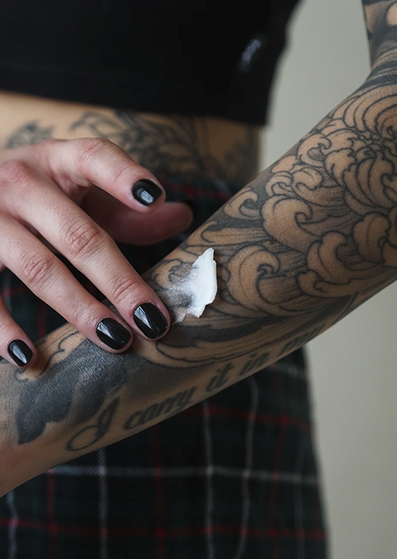

A dor de uma tatuagem varia muito de pessoa para pessoa e depende de vários fatores:
Áreas com mais ossos ou menos gordura tendem a ser mais sensíveis, como as costelas, tornozelos ou dedos. Por outro lado, áreas com mais músculos ou pele mais espessa, como a parte superior do braço ou coxa, costumam ser menos doloridas.
Além disso, a expectativa e o
entusiasmo pelo resultado final
ajudam bastante a lidar com a dor.

O cuidado pós-tattoo é fundamental para garantir uma boa cicatrização e preservar a qualidade da tatuagem.
Me segue no Instagram e salva o contato